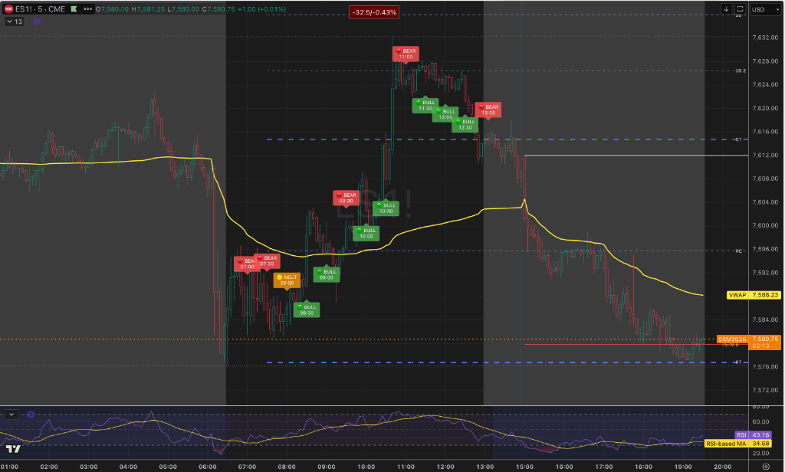
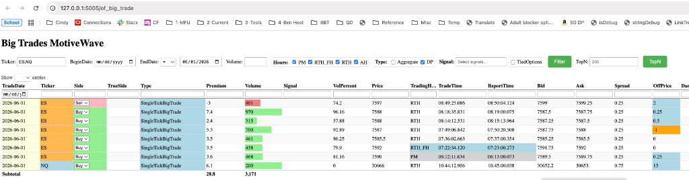

Gemini Answer
Question
图一是今天的orderflow实时分析结果 (/Users/zhijiebian/Documents/Workplace/PycharmProjects/BBTrading/PyTools/order_flow_analysis/ai_tape_analyst.py )
图二是RTH ES NQ SingleTickBigTrade大单（很bullish）
但12:30后开始下跌 盘后下跌了更多 请分析12:30 之前的orderflow数据 有什么evidence/clue 预示了这个大的下跌吗


Answer
结合您提供的两张图表以及 12:30 之前的 Order Flow（订单流）与大单数据，可以从微观结构和量价行为中梳理出以下几个预示后续大跌的关键线索（Evidence & Clues）：
1. 大单资金的“时空错配”：底部吸筹 vs 高位无跟风
观察图二（SingleTickBigTrade 大单列表）：
* 入场位置：今天 ES 的巨额主动买单（970手、700手、458手、461手等）几乎全部集中在 07:22 至 08:18 之间，对应的价格区间在 7585.50 - 7592.00（即日内低位及图一中的黄线 VWAP 附近）。这确实是极强的主力被动吸收与主动推升（吸筹阶段）。
* 高位缺失：当价格在 11:00 之后推升至 7620 - 7628 的日内高位时，大单列表中完全没有出现新的大额主动买单跟风。这意味着推升至高位的动力主要来自于散户的 FOMO 或前期空头的止损（Buy Stops），而真正的机构大单在 7620 上方已经停止了追高，甚至开始进行多头平仓（Distribution）。
2. 关键时点（11:00）的“看空吸收”与“主动打压”
图一中，11:00 出现的 BEAR 信号 是日内高位结构发生本质改变的第一个警示牌：
* 订单流细节：11:00 价格触及 RTH 高位区间（85.7%），虽然最近 30 分钟累计 Delta 仍为正，但在 7628.00 上方遭遇了极为强劲的被动看空吸收（Bearish Absorption）。
* 空头增量：在该 30 分钟的最后 5 分钟内，盘口直接出现了主动卖盘（Aggressive Sellers）的增量打压，迫使价格从 7628.00 快速回落至 7624.25。这表明高位存在极其坚硬的限价卖单墙（Limit Sell Orders），且主动空头已开始尝试夺回短期主导权。
3. 12:30 “Supply Trap”（卖盘被吸收）的欺骗性与衰竭
12:30 虽录得 BULL 信号，但其结构在当时所处的“位置”具有极高的风险：
* 背离的局限性：12:00 - 12:30 期间，净 Delta 为负（-614），价格微涨 1.50 点，盘口判定为“卖盘被吸收”。然而，这种吸收是发生在该交易日 88.4% 的绝对高位。
* 多头衰竭信号：在高位出现负 Delta 伴随价格滞涨/微涨，往往不是健康的吸筹，而是多头主动买方动能耗尽（Buyers Exhaustion）的征兆。此时的“卖盘被吸收”更像是在高位利用被动买单维持价格稳定以利于出货，或者是最后的空头不死心进行最后的抵抗，上方流动性已经变稀薄。
4. 13:05 确认信号：“买盘被吸收”的最终确立
紧接着 12:30 的虚假繁荣后，13:05 订单流立即给出了明确的 BEAR 信号：
* 30分钟内整体出现经典的 “买盘被吸收”（Divergence of Aggressive Buyers Absorbed），Delta 与价格呈现相反的下行背离，且价格处于高位 69.2%。
* 这证实了多头在 12:30 强撑后，主动买方彻底放弃抵抗，被动卖方的压制力量在 7620-7628 区域完全胜出。一旦多头止损盘在 7615-7612 区域被触发，下方由于缺乏 7600 以上的机构买单支撑，价格便迅速向早盘大单吸筹区（VWAP 7588 附近）进行均值回归，并由于多头爆仓（Long Liquidation）引发了更深幅度的盘后下跌。